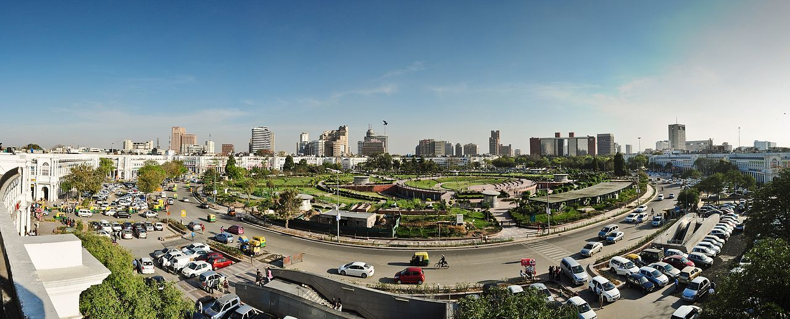

The economy of Delhi is the 13th largest among states and union territories of India. The nominal GSDP of the NCT of Delhi for 2020-21 was estimated at ₹15.98 lakh crore (US$210 billion) recording an annual growth of 8.1%. Growth rate in 2014-15 was 9.2%.In 2020-21, the tertiary sector contributed 85% of Delhi's GSDP followed by the secondary and primary sectors at 12% and 3% respectively. The services sector recorded an annual growth of 7.3%.[4] Economy of National Capital Territory of Delhi Skyline at Rajiv Chowk.JPG Connaught Place in New Delhi is an important economic hub of the National Capital. Statistics GDP $210 billion of NCT; 2020-21est.)[1]320 billion (PPP Metro GDP)[2][1][3] $210 billion (GDP Nominal) GDP rank 13th GDP growth 11.5% annually (2013–18)[4] GDP per capita ₹584,004 (US$7,800) (current prices; 2020–21) GDP per capita rank 1st GDP by sector Agriculture 2% Industry 12% Services 86% (2020–21)[4] Unemployment Positive decrease 6.6% (Nov 2020)[5] Public finances Budget balance ₹−5,902 crore (US$−780 million) (2019–20 est.)[4] Revenues ₹50,767 crore (US$6.7 billion) (2019–20 est.)[4] Expenses ₹60,000 crore (US$8.0 billion) (2019–20 est.)[4] Delhi is the largest commercial centre in northern India. As of 2020, recent estimates of the economy of the urban area of Delhi have ranged from $320 billion (PPP metro GDP) and it has $210[1] billion as (GDP Nominal) ranking it either the most or second-most productive metro area of India.[1][2][6][3]
